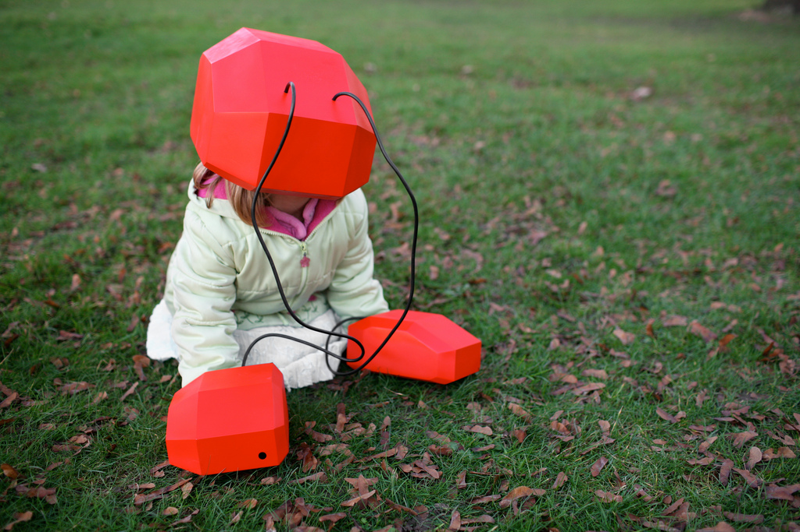
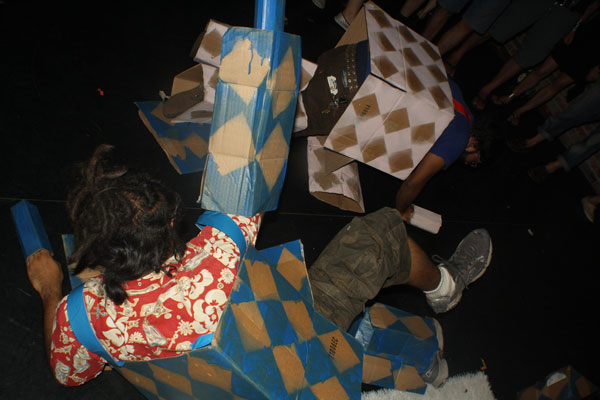

people doing strange things with electricity
The 38.11.15-th dorkbot-nyc meeting took place at 7pm on Wednesday, September 1st, 2010 at Location One in SoHo.
+++++++
It featured the reclusive and pragmatic:

Chris Woebken: Animal Superpowers
Our senses evolved to equip us with the skills necessary for survival in the natural world. Rather than enhancing the functional aspects of products, I am interested in designing new sensory experiences in relation to the invisible. We know that animals have extraordinary abilities allowing them to sense information and perceive the world through sensory experiences far beyond anything humans will know. I want to create a discussion about how our relationship to natural systems might change in the future. I will demo Animal Superpowers and also introduce an overview of my research projects around the human-nonhuman inter-species relationship.
http://www.chriswoebken.com
Simon Burton: Telephone telepathy
Most of us have experienced it, or think we have. The sense of knowing who is calling, before we even answer the phone. Is it just coincidence, or can we measure this effect? Simon Burton will be presenting a new public experiment starting in the US, and discuss some of the controversy revolving around such research. This is work being supervised by Dr. Rupert Sheldrake.
http://www.telepathyexperiment.com
Kunal Gupta & Syed Salahuddin: BUILD UR OWN BABYCASTLE
Babycastles is an effort to provide a social home for the game development culture that has long been part of New York City. As a new function of a legendary all-ages venue for Brooklyn music and other local diy-culture, Babycastles is a wall of six lovingly decorated arcade cabinets that offers a physical place to play games made by amateur and independent game developers. The arcade is open four or five nights a week, during every show at the Silent Barn. The venue throws an opening party every few weeks for a new collection of arcade games, with the game developers present, music, drinks, and plenty of opportunity to get together and love games. We'd like to focus a little bit about how affordable this project has been, our game installation script built from the source code of AutoHotkey, the effect an arcade for local developers has on a venue and on the city, upcoming arcade spaces that we know are opening this year, and overall just encourage and help out more arcades in the city.
http://babycastles.com
Next meeting: 06 October 2010